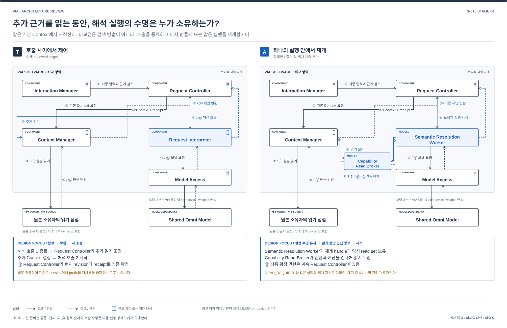
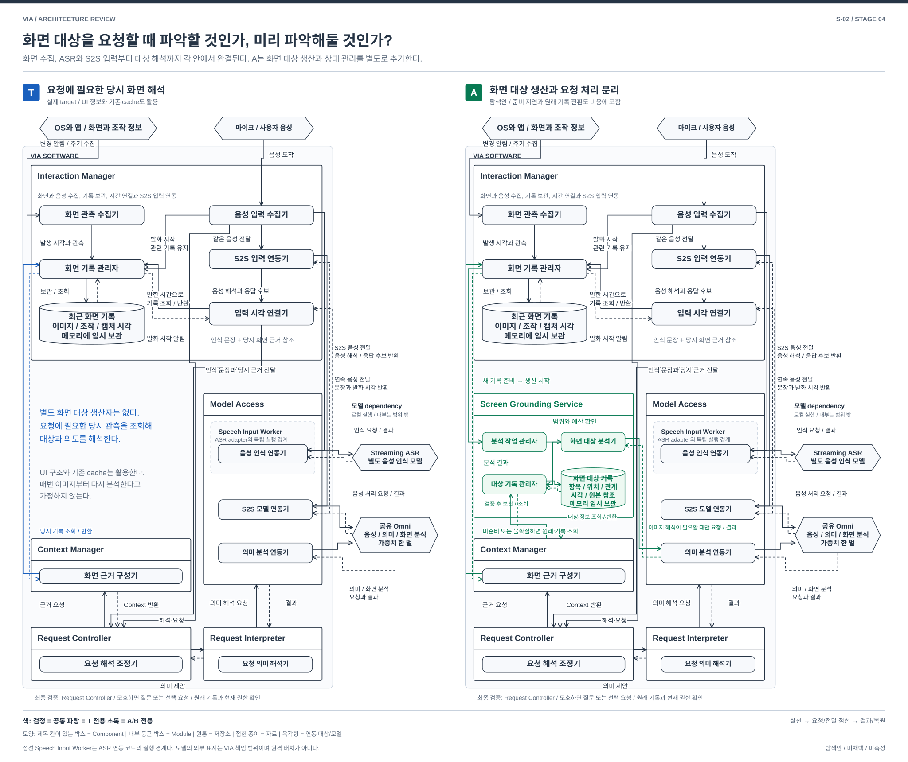
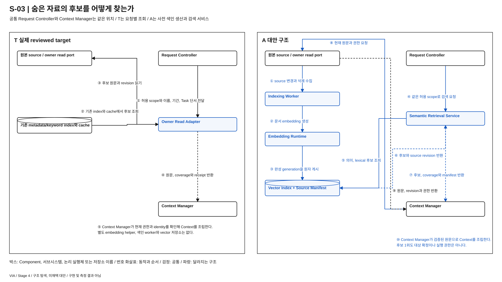
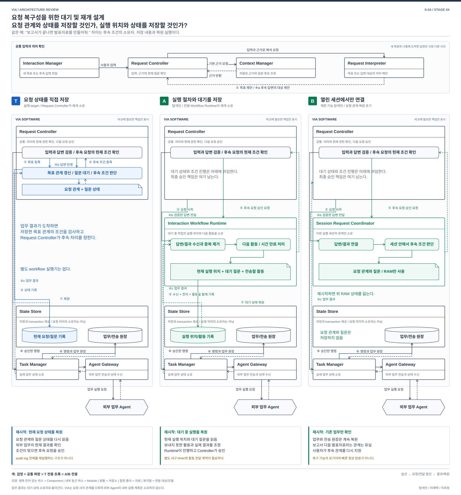
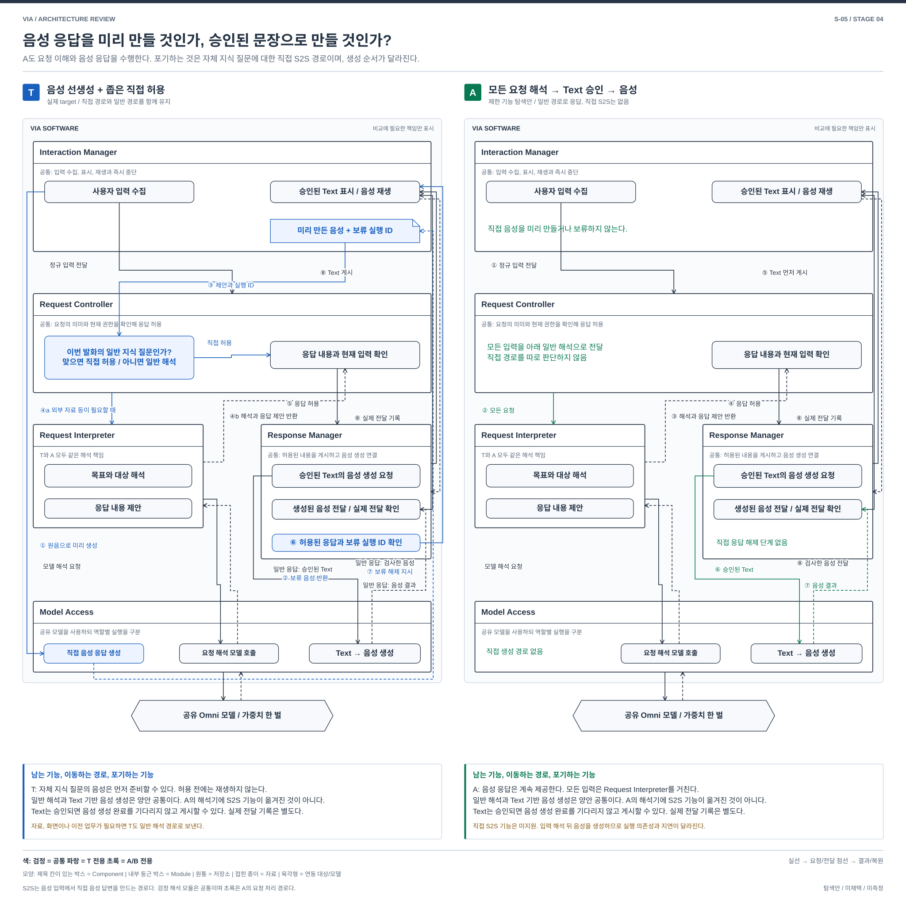
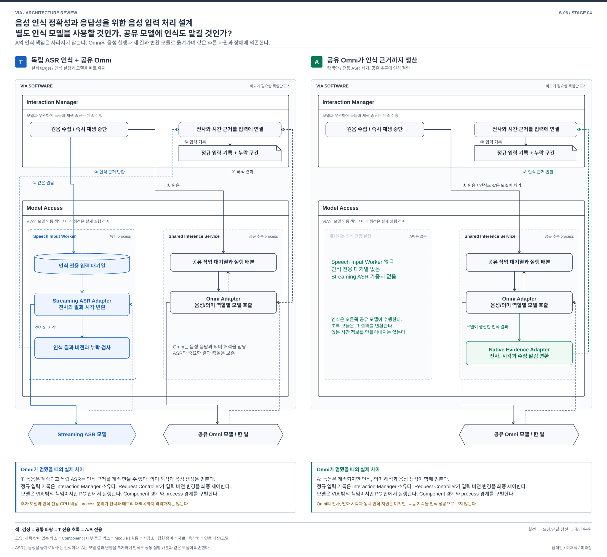

<!doctype html><html lang="ko"><meta charset="utf-8"><title>VIA Stage 4 구조 비교</title><style>body{margin:0;background:#eef1f5;font-family:Arial,sans-serif}header{padding:24px;background:white}section{max-width:1800px;margin:30px auto;background:white;padding:20px}img{display:block;width:100%;height:auto}h2{font-size:20px}p{font-size:16px}</style><header>Stage 4 / S-01~06 설계 비교 / SVG와 편집 가능한 draw.io 원본</header><section><h2>S-01  |  근거 보완의 실행 경계를 바꾼다</h2><p><a href="stage4-s01-comparison.svg">SVG</a> / <a href="stage4-s01-comparison.drawio">draw.io</a></p></section>
<section><h2>S-02  |  당시 화면의 근거를 언제 만드는가</h2><p><a href="stage4-s02-comparison.svg">SVG</a> / <a href="stage4-s02-comparison.drawio">draw.io</a></p></section>
<section><h2>S-03  |  후보를 미리 생산하는 검색 서브시스템</h2><p><a href="stage4-s03-comparison.svg">SVG</a> / <a href="stage4-s03-comparison.drawio">draw.io</a></p></section>
<section><h2>S-04  |  대기와 재개의 권위 원본을 선택한다</h2><p><a href="stage4-s04-comparison.svg">SVG</a> / <a href="stage4-s04-comparison.drawio">draw.io</a></p></section>
<section><h2>S-05  |  좁은 S2S 경로와 Core-only 응답을 비교한다</h2><p><a href="stage4-s05-comparison.svg">SVG</a> / <a href="stage4-s05-comparison.drawio">draw.io</a></p></section>
<section><h2>S-06  |  음성 근거 생산자의 실행 및 장애 경계</h2><p><a href="stage4-s06-comparison.svg">SVG</a> / <a href="stage4-s06-comparison.drawio">draw.io</a></p></section></html>
